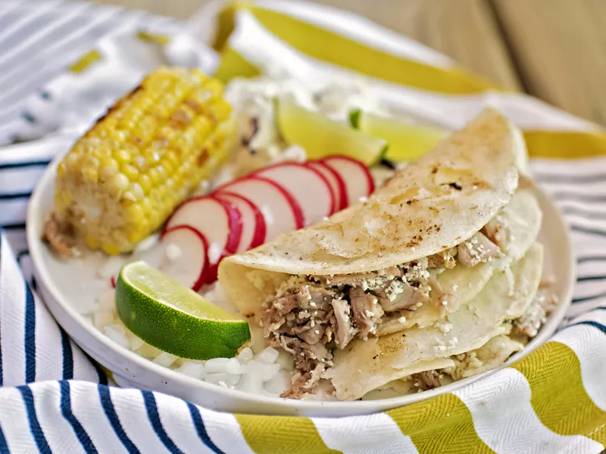

Tacos de Puerco desmenuzado en olla de cocciòn lenta

Receta de Tacos de Puerco
Este versátil puerco desmenuzado en olla de cocción lenta no podría ser más fácil. Simplemente coloque la carne en la olla de cocción lenta,
agregue saborizantes, cocine y desmenuce, y luego mezcle los ingredientes saborizantes y la grasa para obtener una salsa increíble.
Genial para tacos o quesadillas, o déjelo en trozos para su plato principal. Agregue los ingredientes que desee: rodajas de aguacate,
cilantro, jugo de lima, cebolla picada, repollo rallado, rábanos, ¡usted decide!
Ingredientes
1 lomo de cerdo asado (6 libras)
8 dientes de ajo
4 hojas de laurel
4 tomates Roma, en cuartos
1 cebolla grande, cortada en octavos
3 chiles guajillos secos, sin tallos ni semillas
2 cucharaditas de comino molido
2 cucharaditas de sal kosher, o al gusto
1 cucharadita de pimienta negra recièn molida
2 1/2 tazas de caldo de pollo
24 tortillas de maìz
12 onzas de queso cotija, rallado
1/2 cebolla, picada
1 1/2 tazas de repollo rallado
1 manojo de ràbanos, en rodajas finas
3 limas, cortadas en octavos
Pasos:
Combine la carne de cerdo asado, los dientes de ajo, los tomates, la cebolla, los chiles guajillos, el comino, la sal y la
pimienta en una olla de cocciòn lenta grande (de 5 a 6 cuartos); vierta el caldo de pollo sobre el asado.
Tape, cocine a temperatura altas hasta que el cerdo estè tierno, de 5a 7 horas. Retire el asado de la olla de cocciòn lenta;
dejar enfriar durante unos 10 minutos. Triture la carne de cerdo con 2 tendedores, desechando cualquier grasa o membranas.
Deseche las hojas de laurel. Vierta las verduras cocidas y el lìquido a travès de un colador; reserve el lìquido de la cocciòn
y reserve. Coloque las verduras cocidas en el recipiente de un alicuadora o procesador de alimentos; mezcle hasta obtener un purè suave.
Para la salsa para mojar, retire el exceso de grasa del lìquido de cocciòn; dejar la grasa a un lado. Regrese las verduras en purè y el
lìquido de cocciòn desgrasado a la olla de cocciòn lenta; cocina, tapado, a temperatura alta hasta que estè listo para servir.
Agregue una capa delgada de grasa reservada a una sartèn grande o comal a fuego medio-bajo. Ablande las tortillas calentàndolas por
cada lado furante 1 a 2 minutos.
Para hacer tacos, coloque aproximadamente una cucharada de queso rallado, 2 cucharadas de carne de cerdo desmenuzado y una cucharada
adicional de queso rallado en la mitad de una tortilla caliente. Dobla la otra mitad de la torilla sobre el relleno; repita con todas las
tortillas.
Agregue una capa delgada de grasa reservada a la sartèn o comal a fuego medio. Coloque las tortillas dobladas y rellenas en lostes en
la sartèn caliente; cocina hasta que estèn doradas, de 3 a 4 minutos por lado. Use una espàtula para mover el queso que rezuma de vuelta
al taco.
Sirva la salsa para mojar de la olla de cocciòn lenta en tazones para servir individuales; decore casa tazòn con repollo rallado, ràbanos
ceboola picada y un chorrito de jugo de lima. Sirva los tacos tibios, con salsa para mojar.